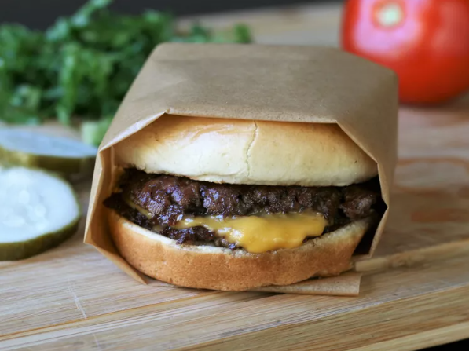

This smash burger recipe makes super juicy burgers with crispy edges.Don't use
meat that is leaner than 80/20 for best results, and make sure the meat is very
cold. I prefer to cook these outdoors to avoid smoking up the kitchen. These grill
up very fast because of the high heat, so make sure you have everything ready to go!
Preheat an outdoor grill for high heat and lightly oil the grate. Set a cast iron flat-top
griddle or large cast iron skillet onto the grill and preheat until smoking.
Spread butter on the inside of the buns and toast on the flat-top until lightly browned. Set aside.
Form meat into 8 loosely-packed balls, 2 ounces each. Do not pack the meat
tightly, as this will prevent it from smashing properly. Place each ball on the hot
flat-top, cover with a piece of parchment (to prevent sticking to the spatula; re-use
each parchment square on a second patty) and immediately smash down to
a 1/4 inch thickness using 2 stiff, sturdy spatulas that are criss-crossed to get
proper leverage as you press down. You may also use the bottom of small skillet.
Sprinkle the meat with salt.
Grill for about 45 seconds, until the edges are dark brown and the centers are a
light pink color. Using a bench scraper or firm spatula, gently scrape up the
patties, flip over and immediately cover 4 of them with cheese. Grill an
additional 15 to 20 seconds; stack the plain patties over the cheese-covered
patties so you have 4 stacks. Move each stack to a bun and serve with your
favorite toppings.
Come back to Odin recipes